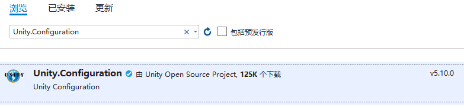

简介
Unity ：是微软用C#实现的轻量级，可扩展的依赖注入容器。
控制反转：（Inversion of Control，缩写为IoC），是用来消减程序之间的耦合问题，把程序中上层对下层依赖，转移到一个第三方容器中来装配。
依赖注入：（Dependency Injection，缩写为DI）：我们向容器发出请求以后，获得这个对象实例的过程就叫依赖注入。
实现
使用NuGet程序包添加引用：
输入Unity.Configuration搜索并下载会自动添加所需的包（Unity.Container，System.Runtime.CompilerServices.Unsafe，Unity.Abstractions）

配置文件如下：
<?xml version="1.0" encoding="utf-8"?>
<configuration>
<configSections>
<!--定义配置节处理程序与配置元素之间的关联。-->
<section name="unity" type="Microsoft.Practices.Unity.Configuration.UnityConfigurationSection,Unity.Configuration" />
</configSections>
<unity>
<containers>
<container>
<!--type为对象的名称,mapTo为注入对象的名称 写法为用逗号隔开两部分，一是类的全部，包括命名空间，二是程序集名称-->
<register type="YK.Interface.IPms,YK.Interface" mapTo="YK.Pms.Xlp.BJAiTe,YK.Pms.Xlp.BJAiTe">
<lifetime type="singleton" />
<!--Api接口-->
<property name="Url" value="*****"></property>
<!--用户名-->
<property name="UserName" value="*****" />
<!--密码-->
<property name="UserPassword" value="*****"/>
</register>
</container>
</containers>
</unity>
</configuration>配置文件初始化：
var configFileNames = Directory.GetFiles(@"D:\YKConfig", "*.config");
if (configFileNames.Length != 1)
{
MessageBox.Show($@"D:\YKConfig文件夹里面必须只能一个配置文件，现在有{configFileNames.Length}个");
return;
}
var fileMap = new ExeConfigurationFileMap
{
ExeConfigFilename = configFileNames[0]
};
//从config文件中读取配置信息
var configuration = ConfigurationManager.OpenMappedExeConfiguration(fileMap, ConfigurationUserLevel.None);
//获取指定名称的配置节
var section = (UnityConfigurationSection)configuration.GetSection("unity");
//创建容器
var _Uc = new UnityContainer();
//载入容器
section.Configure(_Uc);在VMMainWindow里添加公共成员，并用 [Dependency]在上方标记：
[Dependency]
public IPms Pms { get; set; }用RegisterSingleton去注册：
_Uc.RegisterSingleton<VMMainWindow>();最后使用Resolve去解析：
var vmMain = UC.Resolve<VMMainWindow>();这样就获取到了容器里面的内容。